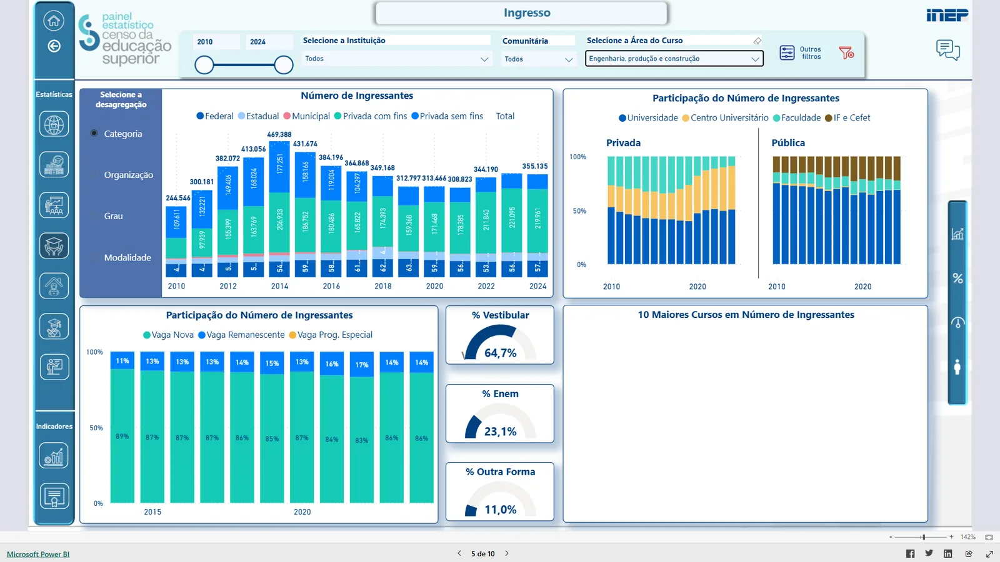
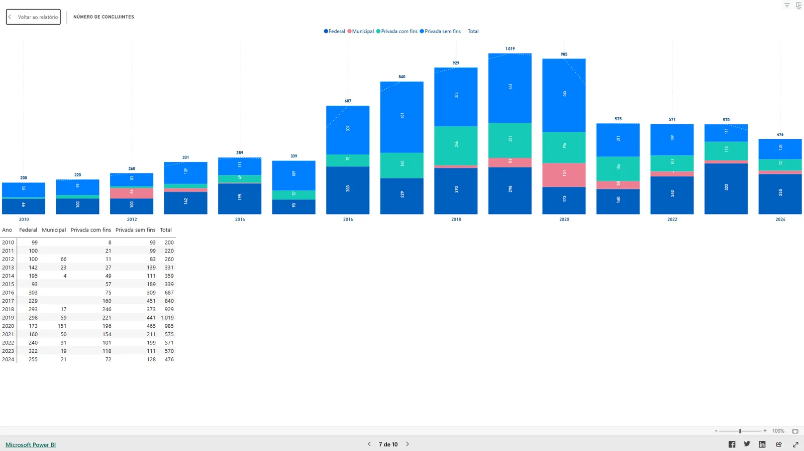

Coleta automática do painel do INEP
Robô que abre o painel público do Censo da Educação Superior, filtra a área de engenharia, percorre as 27 UFs e grava as séries de ingressantes e concluintes em Excel.
- Fonte
- Painel estatístico do INEP (Power BI)
- Recorte
- Engenharia, produção e construção
- Período
- 2010 a 2024
- Saída
- 2 planilhas com 28 abas cada
27UFs percorridas
2indicadores: ingresso e conclusão
15anos por UF
5categorias de instituição
Telas
Painel público do INEP, capturado pelo robô durante a coleta.




Fluxo do processo
Abertura
Painel do INEPPower BI público
Página
Ingressohexágono do menu
Conclusãohexágono do menu
Filtros
Área do cursoEngenharia, produção e construção
UFuma das 27, com rolagem da lista
Leitura
Mostrar como tabelaano e 5 categorias
Volta ao relatóriolimpa o filtro de UF
Saída
Ingressante.xlsxaba Consolidado + 27 abas
Concluinte.xlsxaba Consolidado + 27 abas
Antes de Sergipe e Tocantins o robô recarrega a página: depois de cerca de 25 leituras o painel deixa de responder.
Funcionalidades
- Modo testeConfere se as 27 UFs aparecem no filtro antes da coleta.
- Lista virtualO filtro só mostra parte das UFs; o robô rola a lista até achar a UF.
- Colunas padronizadasFederal, estadual, municipal, privada com e sem fins e total, mesmo quando a UF não tem uma categoria.
- CapturasGrava uma imagem a cada etapa para conferir falhas.
Pontos de manutenção
Mudanças no layout do painel do INEP quebram a coleta nestes pontos.
- AltaPosição do filtro de área, textos dos hexágonos e da área.
- MédiaCaixas de seleção das UFs, opção Mostrar como tabela, colunas da tabela.
- BaixaIndicador de página e botão Voltar ao relatório.
Linhas gravadas
Linhas da aba Consolidado (UF e ano)
27 UFs vezes 15 anos dão 405 linhas; algumas UFs têm menos anos na tabela do INEP.
Tecnologias
PythonPlaywrightpandasopenpyxl